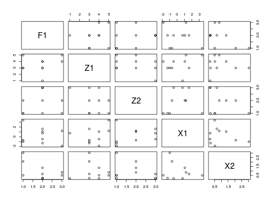
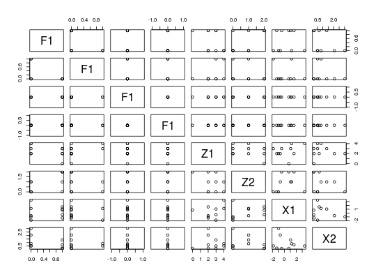
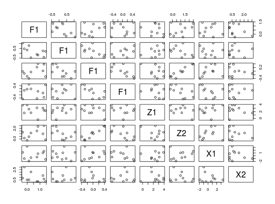

Applies the continuous convolution trick, i.e. adding continuous noise to all
discrete variables. If a variable should be treated as discrete, declare it
as ordered() (passed to expand_as_numeric()).
cont_conv(x, theta = 0, nu = 5, quasi = TRUE)
| x | data; numeric matrix or data frame. |
|---|---|
| theta | scale parameter of the USB distribution (see, |
| nu | smoothness parameter of the USB distribution (see, |
| quasi | logical indicating whether quasi random numbers sholuld be used
( |
A data frame with noise added to each discrete variable (ordered columns).
The UPSB distribution (dusb()) is used as the noise distribution.
Discrete variables are assumed to be integer-valued.
Nagler, T. (2017). A generic approach to nonparametric function estimation with mixed data. Unpublished manuscript.
# dummy data with discrete variables dat <- data.frame( F1 = factor(rbinom(10, 4, 0.1), 0:4), Z1 = ordered(rbinom(10, 5, 0.5), 0:5), Z2 = ordered(rpois(10, 1), 0:10), X1 = rnorm(10), X2 = rexp(10) ) pairs(dat)pairs(cont_conv(dat)) # continuously convoluted data